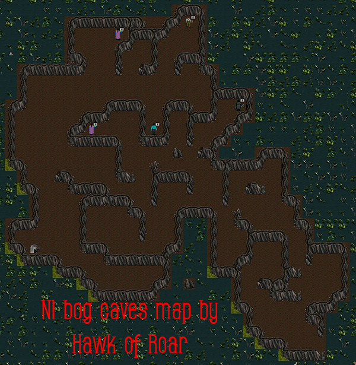
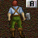
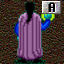

| Back To Forgottens | ||
| Bog caves | Area Information | |
 |
The cave before the bogs, come here to do various quests. Click for map of bogs |
|
| Kurashna: Bring him a batwing as well as a enchanted terror blood to receive a breath capture vial |
 |
|
| Fildatry: Bring him a Large pine tree for advanced ep regen quest |
||
| Youpor: Bring him 10 nork yp's and he will give you a 10oz yp |
 |
|
| Blamex: Bring him a Large pine tree for advanced hp regen quest |
||
| Alchemix: Bring a terror blood and perfect oak sappling to enchant the terror blood. |
||